General Modeling Guidelines
This document is intended to provide a basic guideline for taking a part or project from concept through Release-To-Production (RTP), to infinity and beyond using Pro/ENGINEER (ProE).
This guide will establish common methods for all users, such that each individual user will understand parts and assemblies created by others.
 Configuring your local environment for ProE
Configuring your local environment for ProE
The ProE client is installed on the local machine, the program then “floats” a license over the network. The installation point of the ProE client is referred to as <proe_loadpoint>. It is crucial to follow the accepted practice of locating <proe_loadpoint> on it's own partition, separate from the operating system (OS) partition.
<proe_loadpoint> should be D:\PTC\ProductName_datecode (i.e. D:\PTC\Wildfire2_M180)
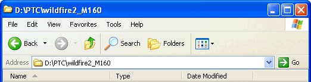
DO NOT accept the default installation location in the PTC Setup dialog during installation! Reasons for this requirement include:
- common <proe_loadpoint> to enable server-side shell scripts, etc.
- common <proe_loadpoint> to enable config.pro mappings, menu_def.pro includes, etc.
- <proe_loadpoint> in a path without spaces (ie. ~\Program Files)
- better chance of data recovery in case of hard-/software failure
- enable client-side scripts and utilities (clean, purge, etc)
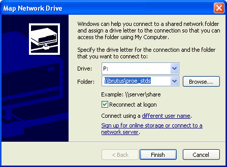
First, in order for the locations of files, directories and other utilities to function correctly, you must creat a new mapped network drive to the location \\brutus\proe_stds.
Choose Tools > Map Netwok Drive... from any windows explorer folder view.
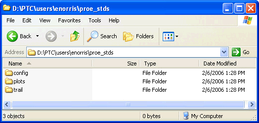
Next, create the following file structure, "D:\users\YOUR_NAME\proe_stds". Please use your Avidww login name here (eg. enorris) in place of "YOUR NAME".Under the "proe_stds" folder, create folders called "config", "plots”, and "trail". Either delete or move into a new directory (eg. old_configs) any existing *.pro files in your home directory – i.e. config.pro, and menu_def.pro. When you're done it should look something like the image to the left.
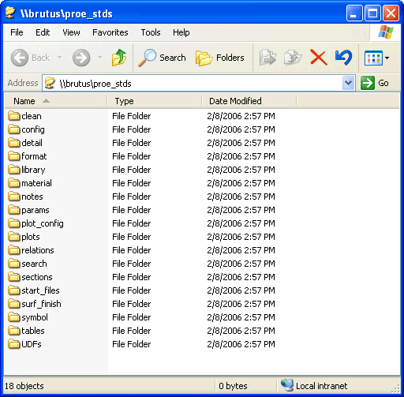
The following instructions are for localizing your ProE environment. Always check with the ProE system administrator (whoever that is) before implementing. All the needed files for the digiME set up can be found in the directory: \\brutus\proe, and will look something like the image on the right.
From the "\\brutus\digiME\proe_stds\config" directory copy the "config.pro", "config.win", "layersetup.pro" and "menu_def.pro" to your "D:\users\YOUR_NAME\proe_stds\config" directory. Open the "config.pro" in Wordpad and edit the lines under "DIRECTORY SETUP " to replace "YOUR_NAME" where required. You can make any other modifications (usually adding your own map keys) you want to the "config.pro" as they will overwrite the default settings. Your "config.win" will be the default and will be modified if you make any changes to the windows GUI (toolbars, etc).
Please only add to the configuration files, that is, do not delete or comment out anything. The config files only contain barebones functional stuff so you are free to modify the look and feel, add mapkeys, etc.
Be sure to set the "start in" location of the ProE shortcut to your local configs directory! To do so, right-click the shortcut icon, select "properties" and change the "start in" box to read "D:\users\YOUR NAME\proe_stds\config", using whatever you just created for "YOUR NAME". This will ensure ProE reads your config.pro, rather than the default.
digiME proe_stds - under the hood <back to top>
...\proe_stds\clean
A utility to clean unnecessary ProE files from any directory. This can be accessed in Pro/E through the UTILITIES menu. Also Pro/pugre? RePurge? sPurge? TBD...
...\proe_stds\config
This is where "config_local.pro", "config_local.win", "menu_def_local.pro" live. Also, ...
...\proe_stds\detail
This is where *.dtl files live. More later, ...
...\proe_stds\format
A directory to store and retrieve standard digiME drawing formats. This is more for archival purposes, once we get the formats nailed down we should keep backups here. More for superstition's sake...
digiME standard formats have been created to work with the digiME start parts. These formats are named using the following convention:
DRAWING-SIZE_digiME_UNIT-SYSTEM_ VERSION.frm
Thus the format C_digiME_ENG_1_0.frm is the C-size digidesign format, English units, version 1.0.
...\proe_stds\material
The config.pro is set up to assign density paramters based on material properties specified by these material files. There are currently over 350 files here for common metals, alloys and plastics. Please feel free to add more by using the links at the top of the page.
...\proe_stds\notes
This is where *.txt note files live. Also Mark's most excellent spreadsheets.
...\proe_stds\params
Parameters, etc. More later....
...\proe_stds\plot_config
This is where *.pcf and *.pnt files live. More later....
...\proe_stds\relations
relations, etc. More to come...
...\proe_stds\sections
Got a gnarly section? Put it here to share.
...\proe_stds\start_files
A standard part (regular and sheet metal) and assembly that will be the starting point for all new designs. These start files can be accessed from buttons on the Wildfire2 toolbar \\digiME// fly-out button.
...\proe_stds\symbol
there are over 200 symbols here, some are redundant, some are way cool! You decide which...
...\proe_stds\tables
Your one-stop-shop for tables
...\proe_stds\UDFs
This is currently empty.
Part Creation
Types of Parts and Part Naming Conventions <back to top>
- Off-the-shelf parts are any part that you would find in a catalog, web site, etc. that has a brand name and a part number. Off-the-shelf parts should be named as follows:
- (general description)_(brand)_(part name)_(part number) eg. insert_dodge_ultrasert2_70811-4-562
- Standard parts can be called out with an industry standard like M6x28 Slotted Pan Head Machine Screw or 1/8W 39K 0805 Resistor. Standard parts are named as follows:
- (industry callout)_(general description)_(specific description) eg. m6x28_slotted_panhead
- Skeleton part typically defines attachment points and motion vectors. Usually only needed if moving parts are involved, can sometimes be used as an assembly reference "container" for assembly constraints only.
- Layouts contain global references for things like wall thickness and minimum draft angles can be placed in the layout. All parts reference the layout, and can reference its variables. For example, w e make a part with a wall thickness of 3mm. Instead of using 3mm as our dimension when we shell or offset, we use “min_wall_thickness”. After the project is underway, and we’ve broken out and shelled the parts, we decide to change the wall thickness to 2mm. All we have to do is change the “min_wall_thickness” variable to 2mm, and regenerate.
- Drawings contain all information required to specify, purchase, manufacture, finish, package, receive, inspect, assembly, and inspect again. Did I miss anything?
- Custom parts are any parts that do not fall into either of the above categories. Parts should be given general descriptions that tend to group them with associated parts. For example, all custom parts that are part of a screen assembly could start with a general description of screen. Then parts could follow; screen_bezel, screen_housing, screen_housing_bracket, etc. In the case of mirrored or similar parts, they should follow the part names such as screen_bezel_left and screen_bezel_right.
Generally, try to avoid abbreviations, and structure the name from general to specific, as it reads left to right. There can be more than one specific description or none at all. (Note that part names cannot exceed 31 characters ?) Do not put spaces in filenames! Use the underscore( _) character, not the dash (-) character to help visually distinguish WIP filenames from RTP'ed filenames in crowded directory views. Also, don't use descriptors like "_new" or "_old", that won't mean much in two weeks or so when you are trying to figure which of the nine iterations was the one chosen in that design review!
Be sure to use parts from the Commonspace Library whenever possible!
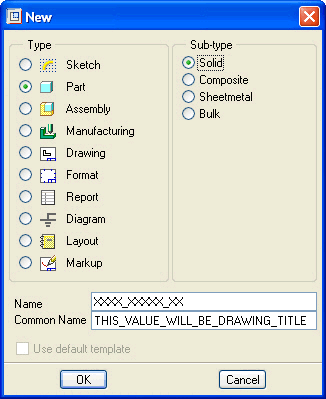
Creating a digiME standard part begins with the New File menu pick from the Wildfire2 menu bar. The template locations for standard part are specified in the config.pro so the "Use default template" option is grayed out.You will be prompted to name the part. Ideally, you will have pulled Digi part numbers and use the appropriate number at initial part creation. If you do not have a Digi part number, you can use the naming conventions detailed in the section below "Types or Parts and Part Naming Conventions".
The "Common Name" field should be filled in with an appropriate descriptor, again adhering to the guidelines detailed below. The "Common Name" value will be used extensively in Windchill, so don't leave it blank!
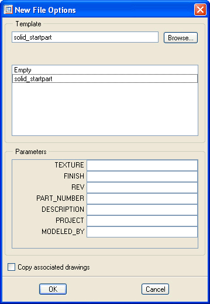
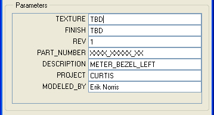
After entering the Name and Common Name, you will be prompted to choose the template (which will default to the value set in the config.pro file so no change should be required). The parameters section of the New File Options dialog represents all designated user-defined parameters defined in the template part.These parameters are used extensively throughout the rest of our development process so don't leave them blank! The TEXTURE, and FINISH parameters are exceptions as they can be reset to the correct values later in the design process. The image above right shows an example.
Fill the required information and then hit OK.
The next thing you will see is a view of the statpart initial geometry and features. Like so:
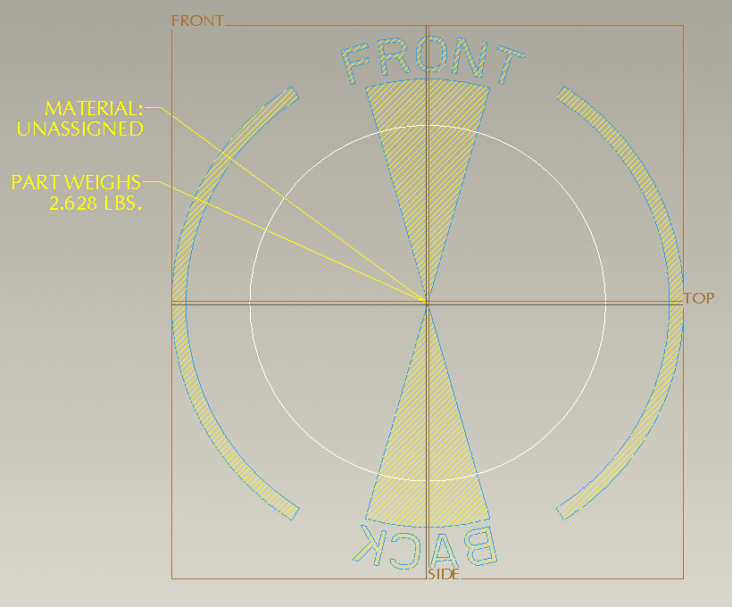
Anatomy of a Start Part <back to top>
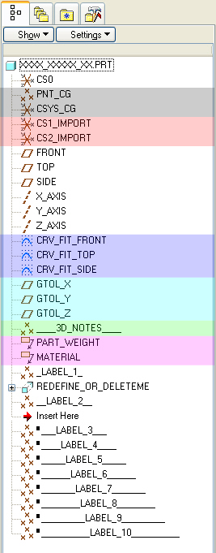
All startparts have carefully crafted base construction features to provide a strong foundation for further feature creation. There is a lot of intelligence built into the base start part, so let economy and elegance be your watch-words.
- PNT_CG and CSYS_CG (gray)- define the Center of Gravity. described in detail below in the relations and parameters section.
- CS1_IMPORT and CS2_IMPORT (red) - zeroed offset coordinate systems for locating imported geomoetry.
- CRV_FIT_* (purple) - curve features used to define the starting model grid size and identify the correct part orientation. CRV_FIT_FRONT for example, viewed from the front the word "BACK" is backwards.
- GTOL_* (cyan) - zeroed datums designated as Geometric Tolerance references for use in the manufacturing documentation and inspection of the part.
- ____3D_NOTES___ (green) - label for the two 3D notes below it in the model tree.
- PART_WEIGHT and MATERIAL (pink) - two 3D notes that display the text of two designated parameters driven by relations. Very cool. Described in more detail below in the relations and parameters section.
- *_LABEL_* - these are simply zeroed points offset from CS0, and then renamed to use as separators and labels for groups of features within the model tree.
REDEFINE_OR_DELETEME is a simple extruded solid created to provide values for the Mass Properties calculations
based on the properties specified in the temporary material file "unassigned.mat".Notice that the part is in "Insert Mode" directly below __LABEL_2__. This means that any new features created at this point will be above ___LABEL_3___ when "Insert Mode" is cancelled. The vast majority of your modeling should be done in Insert Mode at the appropriate points within the feature heirarchy.
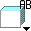
Standard Views <back to top>
Standard view orientation is extremely important as it saves untold cumulative hours constantly re-orienting the view over the development cycle of the product. How many times have you hit "vf" (view front) and found yourself staring at a left view (or whatever). All start files have standard views assigned.
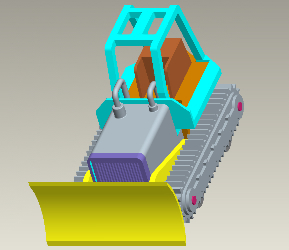
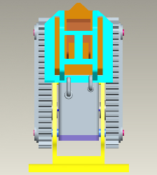
The project should always be oriented in the direction of the primary use for which it is intended. So, a Top View of the assembly should look down on the top of the product with the front of the product towards the bottom of the CAD window. Default View on the left, Top View on the right.The standard config.pro contains mapkey "cvd" to create standard views at the part level and mapkey "cav" at the assembly level. Please note that when starting from a new part using the digiME templates the standard views already exist. The mapkeys "cvd" and "cav" are only necessary for adding standard views to parts created without the standard templates. In which case simply delete all views from the part or assembly and then type "pv" in a part, or "av" in an assembly.
Layers <back to top>
As the feature count grows, it becomes increasingly important to organize features on layers. For example, if we only use the default layers to organize our construction features, it will be very difficult to see individual features, make reference picks, view the quality of individual surfaces, etc. So, we have to create additional new layers to organize our features as we go. Its important to keep up with your layer organization. After you finish your layout curves, create your CRVS_LAYOUT layer, and add the curves. Use “pick many” to grab all the curves. Go on to draw construction curves, and then create a layer for them and add them. It is very easy to do if you do it before you have created any other curves. If you create all your curves and then try to go back to put some on one layer, and some on another, it can be a pain.
Usually, the first primary features created are a series of curves. The naming convention use to create your layouts is critical to maintaining clarity into the construction methods used in your part. Here are some general guidelines:
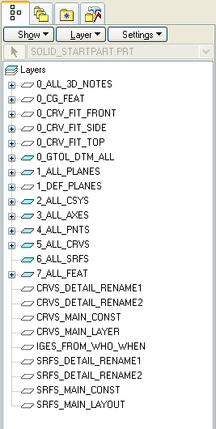
Layers that contain only CURVES should be named beginning with “CRVS_”, eg.- layout curves should be on CRVS_LAYOUT
- main construction curves should be on CRVS_MAIN_CONST
- positioning purves should be on layers like “CRVS_BTNS” and “CRVS_PCB_THRU-HOLES”
Layers containing only DATUMS should be named beginning with “DTMS_”, eg.
- main construction datums should be on "DTMS_MAIN_CONST"
- datums specfic to a feature should be named like "DTM_METER_FRONT", "DTM_MAIN_BACKPLANE"
Layers containing only SURFACES and QUILTS should be named beginning with “SRFS_”
- main construction surfaces should be on “SRFS_MAIN_CONST”
- "SRFS_MAIN_CONST" will likely share components with other layers like "SRFS_MAIN_FRONT", and "SRFS_MAIN_BACK", etc.
- split surfaces should use descriptive layer names like “SRFS_HSNG_SPLIT” and “SRFS_GSKT_SPLIT”
- detail surfaces should be on descriptive layers such as “SRFS_LED_DETAIL” and “SRFS_PWR_BTN”
Layers for Points, Axes, and Csys, etc. can be handled the same way.
IGES data should be put on its own layer such as “IGES_FROM_ID_020706”. The number at the end is the date, to help keep track of subsequent ID revisions.
The layerstatus.pro file establishes standards for layer names and layer structure. The system retrieves this file whenever you begin to create a new object in ProE.
- Change the display status of a number of layers and sublayers in one operation.
- Associate sublayers with other layers, by editing the table.
- Define a default setting for layer status whenever you start Pro/ENGINEER.
Also, see the IGES section of this document for important info about specifying Layer IDs.
Standard Part Parameters <back to top>
Parameters are used to distribute information throughout the design process. For example, the system parameter PTC_COMMON_NAME is declared in Pro/INTRALINK 8.0 and could also be placed in a reapeat region in a table cell on a drawing using the string &PTC_COMMON_NAME to automatically fill in the name of a drawing. A string paramter can be a maximum of 80 characters.
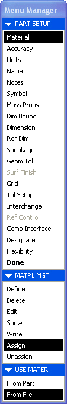
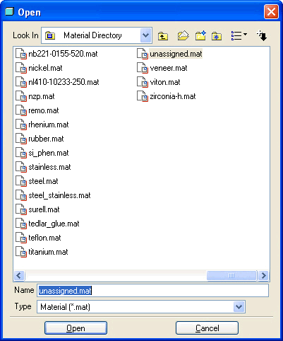
As mentioned above, the startpart specifies the material file called "unassigned.mat". The material file parameters "CONDITION" and "BEND_TABLE" both have the ability to hold text values. The material name can be stored in either one of these parameters if they are not being used to hold condition or bend table information. This value can be called out in a drawing by creating a relationMATERIAL = material_param("CONDITION")
Calling out "&MATERIAL" in a drawing will yield the value stored in the "CONDITION" portion of the material parameter file.
Units can be defined when creating ProE material files. The units are defined using the unit parameters,
- PRO_UNIT_LENGTH
- PRO_UNIT_MASS
- PRO_UNIT_SYS
These parameters are located at the bottom of the materials file and can be defined using the same arguments used to define these parameters in the config.pro.
- PRO_UNIT_LENGTH - UNIT_INCH ; UNIT_FOOT ; UNIT_MM ; UNIT_CM ; UNIT_M
- PRO_UNIT_MASS - UNIT_OUNCE ; UNIT_POUND ; UNIT_TON ; UNIT_GRAM ; UNIT_KILOGRAM ; UNIT_TONNE
- PRO_UNIT_SYS - MKS ; MMNS ; FPS ; IPS ; PROE_DEF
After assigning a material whose units are different from the model unit,
Pro/ENGINEER will return, "Material units differ from part. Convert to part
units ?" If yes is entered, Pro/ENGINEER will automatically convert all the
values in the material file to the part's units. If no is entered,
Pro/ENGINEER will remove the arguments for PRO_UNIT_LENGTH and
PRO_UNIT_MASS and leave all other material parameter values as they
are. If a material that does not have PRO_UNIT_LENGTH and
PRO_UNIT_MASS defined in the file, Pro/ENGINEER will assume that the
units will be the same as those of the part.
The material file associated must be kept up to date as the design changes. The image above and to the left shows the menu picks associated with assigning a material from file...
- Edit > Setup > Material > Assign > From File
The material directory is defined in the config.pro file.
Standard Relations and Analysis Features <back to top>
A relation involving a datum point's translation dimensions, which will place the point at the center of gravity of the part has been added to the starpart. The basic syntax for the relation is:
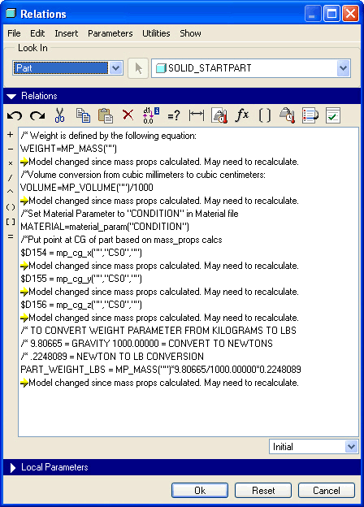
- $d#=mp_cg_x("path","coord_sys","path")
- $d#=mp_cg_y("path","coord_sys","path")
- $d#=mp_cg_z("path","coord_sys","path")
where d# is the dimension number.
The first path is the path to the component for which the value will be calculated. The second path is the path to the component which contains the coordinate system. Since this is a part, there is no path to specify, because a part has no components.
coord_sys is the coordinate system name that the mass properties of the part were calculated from.
The dimensions on the left side of the equations are preceded by dollar signs to allow for negative values. Without the dollar signs, the following error message will appear:
ERROR: Invalid attempt to assign negative value to 'd#'. Please re-enter:
For this example, the relations will be:
- $d154 = mp_cg_x("","CS0","")
- $d155 = mp_cg_y("","CS0","")
- $d156 = mp_cg_z("","CS0","")
To ensure that Pro/ENGINEER can access this information in the part's relations, click Edit > Setup > Mass Props > Generate Report. Click Close in the INFORMATION WINDOW, then Ok in the Setup Mass Properties dialog box.
As you can see from the image above, additional relations have been created to do the following:
- map the "CONDITION" field from the assigned material file to the MATERIAL parameter
- Assign parameter PART_WEIGHT_LBS the value calculated from model mass properties analysis
- convert MP_MASS from kilgrams to pounds and write to PART_WEIGHT_LBS
Feature Creation <back to top>
Plan your model and model your plan.
Parts should be developed using features that best express the models design intent. Before modeling anything you should create a general road-map to accomplish your goals. Some important considerations:
- Choose or create an appropriate base feature. Your base feature(s) should reflect the design intent of the part. Keep your base feature(s) as simple as possible.
- The order of feature creation. Rounds and Chamfers should be used as late a possible in the design process. Draft features should be used when most appropriate.
- Patterning and copying features can reduce the amount of work involved in creating models. Dependence/Independence can be established between copied entities. Patterning allows you to create multiple instances of a single feature quickly. Pattern Tables allow designs to be quickly changed and used in other models.
- Use the appropriate f eature type. Different feature types will result in different dimensioning schemes. It is important to use the features, which will best allow you to capture the dimensioning scheme. You should try and avoid features that require additional calculations.
- Depth options should reflect the dimensioning scheme and should be flexible if the design changes. Users should be careful when using “Through All” or when referencing other surfaces to cut to.
- While modeling try to incorporate all the critical dimensions into the models features and avoid creating any extraneous dimensions.
- Parent Child relations between features should be minimized. Datum planes make the best sketch planes and references. Dimensions should reference features they are toleranced to.
- Be sure that sketcher references are appropriate to the features they represent. Use sketcher references as high in the model tree as possible whenever possible to allow maximum feture portability.
- Do not use the original default datum planes to create geometric tolerancing datums. Create new datums for this task.
- Add features to the appropriate layers as you go, creating new layers if necessary.
Feature Naming <back to top>
Primary features should be named with the convention (feature_type)_(location)_(construction_zone).
- DTM_LEFT_FLANGE
- CRV_FRONT_IO
- SRF_FRONT_PARTING, etc.
Feature Order <back to top>
Feature order is critically important to the stability and flexibility of a model. Obviously, save draft and rounds to the end, but even more, plan the construction of your model before undertaking the task. Think about your foundation features and decide the best order in which to perform subsequent operations. This order will then be easy to follow in the model tree when you group, name and order your features as you go.
Make a practice of keeping up your naming and feature organization as you go, and soon it will become second nature. Eventually you won't even think about it, until you wind up working on someone else's model!!! If the part is modelled logically, with named features and smart grouping, it will be a pleasure to work with. You might even learn some new tricks! BUT, if the part (or entire assembly, heaven forbid!) is hap-hazard, with no logic, or structure...well, we don't even want to go there, do we?
Feature Grouping <back to top>
Construction featuures should be grouped together in the model tree with respect to eachother so as to eliminate confusion and to provide insight into methods used. The idea is that anyone familiar with ProE should be able to see by walking through the model tree how a part is constructed.
Groups of features can separated and labelled with the labels provided in the startparts (which are just points offset from csys (with zero offset) and then renamed for use as labels/separators).
Think of features in terms of their associations, as well as their common references. Try to keep associate feature sets grouped together as tightly as possible and also as high in the model tree as possible. This means you should try to have an associated feature placed as close as possible (or right after) it's highest-numbered common reference. Doing so makes editing much simpler, eliminates unwanted dependencies and closesly controls existing relationships.
The best way to keep sets together is to know exactly what you want, building each feature one after another. However, this is not often the case. Luckily, we have Insert Mode! Again, Insert Mode should be kept active at all times.
Feature Creation <back to top>
High Quality Surfacing
A surface is as only as good as the curves that define it. All properties embodied in the defining curves are taken by the surface defined by them. that is:
- curves must be normal or tangent for the surface boundaries to be normal or tangent
- curve vertices become surface veritces so keep all curves clean with no extraneous points
Curvature continuity is often desirable but often difficult to achieve. Generally the fewer patches (isoparms) the better. Some very usefule tools for helping to control curvature:
- Use Ribbon Surfaces to control boundary tangency when building complex surfaces
- excellent for defining the angle of departure/approach for surfaces (also draft...)
- construction steps:
- >Insert > Datum > Ribbon
- Select main curve then tangency curves that intersect primary curve
- tangency curves can be any form
- use well defined intelligent curves
- good starting curves are two point splines and conics
- eg. if you need an ellipse, use two conics, not one conic or a single multi-point spline
- dimension "control poly" points on splines to achieve controllable results
- curvature continuity can be defined in the sketcher and with "through points" curves
- "through points" curves are a fast and efficient way to create a 3D curve without using two projections
- "through points" curves are an excellent way to ensure tangency or curvature continuity when creating boundary surfaces
Part Detailing - Polymer <back to top>
- Finished parts should 100% detailed with draft, rounds, parting shutoffs, etc.
- use UDFs for bosses with ribs:
- define a curve to locate boss and show height
- UDF specifies number of ribs, rib angle, height, draft, etc.
- uses surfaces to allow easier merging with complex geometry
- use UDFs fir inserts, self-tapping screws, and their mating bosses
Part Detailing - Metal Cast <back to top>
- Finished parts should 100% detailed with draft, rounds, parting shutoffs, etc.
- part should be designed in the final state, showing all secondary operations, etc.
- use 3d notes to specify threading, machining, operations,etc.
- modify surface color to differentiate for clarity in call-outs
Part Detailing - Over Molded <back to top>
Over Molded parts start as Master Model defining the net shape of the final part.
- at least one of the parts defined with surfaces
- ensures better part consistency
- facilitates accurate mass and volume calculations
Part Detailing - Sheet Metal <back to top>
Traditionally designed as a solid and then converted to sheet metal, to allow building the part in its final form. With the advent of Wildfire's increased sheetmetal functionality, this is no longer necessary.
- use library form tools whenever possible
- vents that have no form can be defined as curves to reduce regeneration time
- remember: manufacturers rarrely use the flat pattern provided by ProE
- generally use the default bend tables
Assembly Creation
Design it before you build it!
generally:
- take a "best guess" until stuctural review with MFG, PURCH, etc.
- always create a sub-assembly for parts with inserts
- final assemblies have 100% of parts, including fasteners
- fully detailed BOM is maintained in excel
- keep a working version of the structure flowchart going during design to facilitate the structural review
Some quick tips to increase performance when working with large assemblies:
- Use Simplified Reps to prevent ProE from retrieving unnecessary models into memory.
- Replace models that are not referenced in a drawing view with Geometry Reps. Geometry Reps take approximately half the time to retrieve.
- Use as few (read: NO) assembly features as possible because intersecting components creates hidden copies of the model and this uses additional memory. When sketching assembly features, use closed sections and manually select the components to be intersected. This will prevent Pro/ENGINEER from intersecting extraneous components and will speed up drawing performance.
Design Process <back to top>
“Top-Down Design” refers to the method of placing critical information in a high-level location and then communicating that information to the lower levels of the product structure. As the design develops, more specific information becomes available and is incorporated into the design. By capturing the overall design information in one centralized location, it becomes easier to make significant design changes. Because the information is contained in one place – with all subcomponents looking to that location – if you change this information, the system updates all other components.
- Capture knowledge, or design intent, allowing you to concentrate on significant issues by making the software perform tedious, repetitive calculations.
- Conduct interchangeability of components allowing for high-velocity product development by supporting rapid iterations of product variations.
- Create a concurrent design environment by spreading project design responsibility across many organizational levels.
Quick Summary of Steps to Utilize Top-Down Design Techniques:
- Generate an initial assembly structure
- Create skeletons to define the product information in a 3D form
- Document Design information using Publish Geometry features
- Communicate design information to the individual components using Copy Geometry features
- Create model geometry using the central design information
- Populate assemblies with solid models
- Establish interchangeability to account for design variations
And repeat as necessary...
Note: This is an iterative process – one in which the design becomes more detailed and specific throughout the project. You should, therefore, expect to perform the sequence of steps listed above more than once in order to complete the project.
Step 1: Define Assembly Structure <back to top>
Sketch out a virtual assembly to define the major subsystems or the tasks to be distributed to the various design teams. You do not need to define any new geometry or need to apply specific assembly constraints as it contains only empty parts, empty subassemblies, included components, and unplaced components.
BENEFITS OF DEFINING PRELIMINARY PRODUCT STRUCTURE
- Defining the product structure prior to defining geometry can assist you in organizing the assembly into manageable tasks that can be assigned to design teams or individual designers.
- You can associate specific library parts (that are to be used on the project) with the assembly at the start of the design, preventing confusion later.
- You can submit the assembly to Pro/INTRAINK or PDMLink and assign models to the appropriate vaults or folders.
- Individual designers can focus on specific design tasks instead of on how the design is going to fit into the overall structure.
- You can input non-geometrical information such as the part number, designer’s name, etc., at a very early stage.
- Begin by creating your top-level assembly. File -> New -> Assembly You may enter a name and use the default template, or uncheck it to select another file to copy from.
Step 2: Product Definition - Skeletons <back to top>
In Pro/ENGINEER, you can use a skeleton model as the framework for an assembly. A skeleton acts as a 3D layout of the assembly. It is always the first component and you can have more than one per assembly / sub-assembly by setting the config.pro option “multiple_skeletons_allowed” to Yes. As such, it can be a very stable foundation.
Like layouts, skeletons act as a central location for storing design information relating to the assembly. When the skeleton changes, the components that use this information also changes.
In a top-down design environment, one person creates the skeleton, and uses it to define:
- The product structure
- Interface locations
- Space claims
- Linkages and mechanisms
The skeleton can then be distributed to any others as a central reference for their individual designs.
ADVANTAGES OF USING A SKELETON
- Provides a centralized location for design data
- Simplifies assembly creation / visualization
- Aids in assembling mechanisms
- Minimizes unwanted parent-child relationships
- Allows you to assemble components in any order
- Controls propagation of external references
Tips & Techniques: For each skeleton, Pro/ENGINEER suggests a default name of “assy-name_skel.prt”. Although the system does not require you to use this name, you should consider doing so since it makes it easier to identify the skeleton models.
SKELETON USAGE
- Displays them in the Model Tree with a unique icon
- Displays them in blue when shading them
- Automatically blanks them from drawing views
- Allows you to filter them from the BOM
- Filters them from mass property calculations
- Allows you to select them during Simplified Representation creation using By Rule à Skeleton
- Begin by creating a skeleton model.
- You may either Activate the skeleton model to continue working in the assembly or Open the skeleton model in Part Mode and work on it here.
- You can then use datum features, surfaces, etc. to begin creating skeletons for:
- Space Claims (define locations of some of the critical components and control the location of those components and subassemblies within the actual design model)
- Interface Design (develop interface information between the different components in the assembly before those components exist)
- Defining Motion (determine linkages in assemblies and how they interact)
Step 3: Communicating Design Intent <back to top>
A critical aspect of the top-down design methodology is communication of information from a centralized location to individual components. There are many advantages to this centralized approachto distribution:
- Task Distribution
- Concurrent Modeling
- Managing External References
Using geometry features, you can copy references from one model to another and to limit the number of external references that you create while modeling you can use the reference control tool.
Master Model Technique <back to top>
The Master Model is a part built entirely of curves, surfaces, and construction geometry (i.e. planes, csys, points, etc.)
- control product ID by defining all major external surfaces, interfaces and elements
- define and manage part break-up
- communicate inter-part relationships and features, such as:
- reveal design
- screw boss locations
- component alignments
- snap locations
- etc.
Master Model technique has the following benefits:
- excellent for design of multiple molded or cast parts sharing complex surfaces
- centralizes all design intelligence for a product in one location.
- allows distributed use of common references (dtms, pnts, etc.)
- enables broad, rapid changes to regenerate through all derivative parts
- increases efficiency and reduces errors
There are often instances where nested Master Models are required, due to product complexity. Using nested Master Models has the following benefits:
- Allows more people to work concurrently on the parts, as they are broken into smaller and less complex files.
- Simplifies modification of files and reduces regenerations by keeping detail at the lowest part level possible.
What to put in the Master Model :
- common primary geometry such as curves, surfaces, etc.
- if the part is symmetrical only half the part should be modeled, using a mirror feature to complete the form
- If it has some other form of symmetry, that should also be used
What to leave out of the Master Model:
- the Master Model should only have features that are used in multiple parts
- any feature(s) that can be wholly modeled in one part, do not put it in the Master Model
- the golden rule is, “when in doubt, leave it out.”
- you can always go back and add it to the Master Model
Using Foundation Curves:
- used to define the overall size and shape of the product
- should consist of the simplest features that cleanly define the form and can be easily modified
- should allow product to grow or shrink in size without requiring the entire part to be redefined or rerouted.
- often extend beyond the part, to allow VSS features, etc.
- must be named with respect to their function, location, etc. (see naming section above)
- must be placed on a layer named after them
Using Foundation Surfaces:
- function in a similar way to foundation curves (often constructed using Foundation Curves)
- generally simple, large surfaces that define the overall form
- (IF well-designed) allow large modifications to the design very late into the detail design phase
- Again, only features that affect the overall form are typically considered foundation surfaces
- must be named with respect to their function, location, etc. (see naming section above)
- must be placed on a layer named after them
Using Construction Curves:
- are the underlying features required to build the part geometry
- should reference the foundation curves so that any modification(s) to the foundation curves are propogated smoothly through all children
- may have surfaces built from them, such as a housing with an access door that shares the same surface
- may also be left stand-alone, such as for defining a button size and location, that does not share a surface with another part
- must be named with respect to their function, location, etc. (see naming section above)
- must be placed on a layer named after them
Using Construction Surfaces:
- function in a similar way to construction curves
- construction surfaces are used to build geometry that can’t be constructed as solid
- the golden rule is, “if you can build it as a solid, build it as a solid.”
- must be named with respect to their function, location, etc. (see naming section above)
- must be placed on a layer named after them
Before beginning construction of a Master Model, one needs to know and understand the following:
- product ID -- create geometry that represents the product in it's simplest form and has enough intelligent definition to define your design intent
- part break-up
- identify part lines and pull directions
- create "Split Surfaces" to define reveal location and design
- build-in all reveal details, creating a "complete" detail
- include all draft considerations
- internal component locations and interfaces
- fastening schemes
- snaps
- bosses
- hinges
- etc.
- CSYS placement location (all derivative components will by definition have a common csys, so choose well...)
General guidleines for creating features within a Master Model:
- Build final surfaces in assembly mode over internal components
- do NOT use assembly references!!!
- build draft into all master surfaces
- if part is not "shellable", offset all surfaces possible and rebuild the failed surfaces
- build the minimum amount of the product, usually one half if the part can be mirrored
A note about layers with respect to the Master Model:
- when you add a layer to the master model, it is automatically added to all derivative parts upon regeneration
- eg. add a layer called _new_layer to the Master Model , regenerate, you now have a layer called _new_layer in ALL derivative parts
- CRITICALLY, if you delete _new_layer from the Master Model, it will NOT be deleted from derivative parts.
- the golden rule: NO temporary layers in the Master Model!
- very important to name your construction features, group features intelligently, and place features on layers named after the major areas of construction
Creating a Master Model:
- create a new part using the default template
- Click Insert > Shared Data > Merge from Other Model... (as of 2001 no longer necessary to create a temp assembly)
- Choose Select or Open from the External Merge definition dialog box
- once a model is selected, choose Coord Sys and pick the desired CSYS
- other options
- Copy Datums
- Dependency
- After completing the merge feature, use File > Save a Copy for the remaining parts in the assembly
General steps for continuing feature creation in the derivative parts:
- Break out individual parts using split surfaces from the master by:
- solidify a closed surface volume and cut away with split surfaces from the master
- -or- create a closed surface volume with split surfaces or other surfaces, then solidify
- create wall thickness using the shell command if possible
- if geometry is too complex for shell command then create offset shelling surfaces in the master
- use copy or offset surfaces to capture your design intent
- go back to the master and modify or add surfaces or other features as necessary, regenerate to propogate changes throughout the derivative parts
- once the shape is complete in the derviative part as intended and defined in the master, then begin detailing the part
- Place the Master Model merge feature on a layer
- use mapkey for quick on/off activation
- save time by doing this on the first part (so subsequent copies wll have this layer...)
- use the same CSYS when assembling all derivative parts into assemblies
- generally only regenerate Master Model changes in the main assembly
- use regenerate > automatic to regenerate all parts in the assembly(ies)
- It is possible (but not recommended) if necessary to modify the Dependency option to control the merge feature regeneration in a specific part(s)
Publish Geometry Features <back to top>
Publish Geometry feature allows you to mark the references in a model that the system should copy into other components. This is a method for identifying references that are stable and appropriate for use.
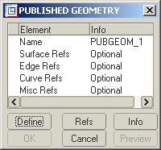
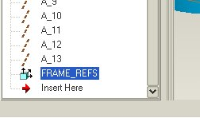
i. In the top-level skeleton model, Insert -> Shared Data -> Publish Geometry...Define for each of the elements accordingly. Provide a name and select any references you wish to make available for other skeleton models.
ii. Once completed you should see something like this in the model tree:
Copy Geometry feature can be used as references within that model to create additional features. Since they reference the top-level product skeleton, you do not need to have access to the top-level assembly. And because each group’s skeleton is made of copied references from the top-level, everyone works with the same design criteria.
- At this point, if you have not already done so, you may wish to constrain your sub-assembly(ies) to the top-level assembly. Simply highlight your sub-assembly in the Model Tree and do a RMB -> Edit Definition and select the Default Location
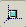
icon. - Activate the sub-assembly you wish to work on and create a skeleton model for the sub-assembly. Open in a separate window.
- To copy the Published Geometry information to this skeleton model, use the pull-down menu : Insert -> Shared Data -> Copy Geometry from Other Model…
- Select the top-level assembly skeleton file or the top-level assembly and define its location.
- Define the Publish Geom element and highlight it in the graphical window.
- Now you have the necessary information copied from the top-level skeleton to your sub-assembly skeleton.
Steps 4 & 5: Create Models & Assemblies <back to top>
Once the information is captured from the top-level skeleton model into the sub-assembly skeleton models, you can:
- Use the copy geometry features to build your parts with
- Use the copy geometry features to assemble your components to:
When assembling components, keep in mind the following guidelines:
- If a skeleton with adequate assembly references is available, you should assemble the components to it. It represents more stable references than any other component since the system will not delete it.
- To avoid assembling to models outside the desired scope, use Pro/ENGINEER Reference Control Settings to ensure that you assemble geometry only at the appropriate level of the assembly or to a skeleton. You can also ensure that you copy geometry only at the appropriate level of the assembly or to a skeleton using these settings.
From Model Tree do a RMB -> Reference Control or from the top pull-down menu Edit -> Setup -> Ref Control
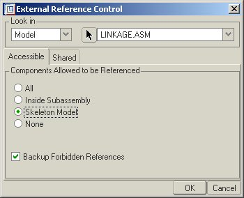
Accessible: Define the scope of components, which may be referenced by the current modelAll: External references may be created to any component
Inside Subassembly: External referencesmay only be created to components in the same sub-assembly
Skeleton Model: External references may be created only to the skeleton of the high level sub-assemblies
None: No external references may be created
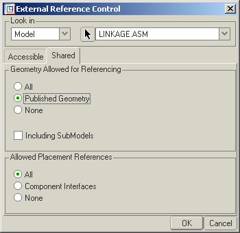
Shared: Define the scope of current model geometry which may be referenced by other models(Geometry Allowed for Referencing)
All: Allow external references to any geometry of this model
Published Geometry: Allow external references only to Published Geometry from this model
None: No External References to this model allowed
(Allowed Placement References)
All: When assembling this model, allow all geomtery to be used as component constraints
Component Interfaces: Allow only component interfaces to be used for component constraints
None: Allow no geometry to be selected as component constraints (Fix or Default must be used)
Config.pro options to assist with Reference Control settings:
- allow_ref_scope_change - No – displays the message “Reference scope changes are prohibited by the configuration file settings” when the Ref Scope user interface is changed
- default_ext_ref_scope - Set default scope for externally referenced models: All, None, Skeletons, Subassembly
- default_geom_scope - Default value for Geometry Scope allowed for referencing
- default_object_invalid_refs - Sets default condition for reference handling. Prohibit – System will abort all attempts to create ext. reference that violates scope. Copy – System will issue warning upon all attempts to create ext. reference that violates scope.
- default_object_scope_setting - Set default condition for reference control: All, None, Skeletons, Subassembly
- ignore_all_ref_scope_settings - Controls whether object-specific reference scope settings are ignored or not. Environment scope settings will still be enforced.
- model_allow_ref_scope_change - Yes – Users can change the scope setting of components.
- scope_invalid_refs - Prohibit – System will abort all attempts to create external reference violating the scope. Backup – Warning appears. Abort reference creation or declare as out-of-scope reference. If you declare, backup copies to part / assembly and backup is referenced.
If you find it difficult to assemble to the skeleton because components are obstructing it, you can use layers or View -> View Manager from the pull-down menu or icon to blank them. You can also use a simplified representation to suppress or exclude them.
Standard Assembly Parameters
more here later...
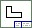
Drawing Creation <back to top>
Some quick tips to increase performance when working with drawings:
- Set the line display of all views to Wireframe. Regeneration time will be faster than if the display of the views are set to Hidden or No Hidden.
- Erase views that are not being used when detailing the drawing. By erasing a view, the display will not be calculated by Pro/ENGINEER and this will decrease regeneration time. Use Views, Resume View to resume the views before plotting.
- Move views which are complete to separate sheets of the drawing. The views can be moved back to the original sheet prior to plotting.
- Use Z-Clipping to reduce graphical information displayed in an assembly view. All geometry behind the Z-Clipping plane will be removed from the display.
- Use Views, Dwg Models, Add Model for adding subassemblies to the drawing. Create views of the subassemblies instead of creating views of simplified representations of the master assembly.
- Create separate drawings whenever possible, as this will prevent Pro/ENGINEER from retrieving unnecessary models into memory.
- Use Pro/BATCH so all plotting can be performed outside of Pro/ENGINEER.
- To minimize retrieval time when plotting, use View Only retrieve. The config.pro option "save_display" must be set to "yes" prior to saving the drawing.
- The display of components in an assembly can be blanked in a drawing. Create layers to blank the display of many components in an assembly. Use Views, Disp Mode, Memb Disp and Blank to also blank the display of assembly components.
- Use the Drawing Representation Tool to remove unnecessary views and to prevent Pro/ENGINEER from retrievng unncessary models into session.
auto_regen_views -- no
display_in_adding_view -- minimal_wireframe
display_silhouette_edges -- no
disp_trimetric_dwg_mode_view -- no
force_wireframe_in_drawings -- yes
retain_display_memory -- yes
save_display -- yes
tangent_edge_display -- no
The drawing parameters "&model_name", "¤t_sheet", "&total_sheets" "&scale", "&type", "&dwg_name" are Case Sensitive. They do not work when used in CAPITAL letters.
File Import <back to top>
IGES
IGES files are rarely positioned correctly in relation to our coordinate system and datum planes. The fastest way to get it where you want is to create an offset coordinate system before you import the file. Offset it from CS0 in every axis by 0mm. Rotate it in every axis 0º. Name it IMPORT_CSYS, or a more descriptive name, if desired...Hey, wait a minute, there's already a csys created specifically for this purpose in the startpart! In fact, there's two, just in case. woohoo!
Import the file, and reference it to your new coordinate system. It will automatically add another coordinate system that has the same name as the file: delete it. Modify the 0 dimensions on your IMPORT_CSYS to move it into position. Sometimes the file contains solids, if it does, you can redefine it to be only surfaces. Put it on a layer. Name the layer something smart, like IGES_IMPORT_DATE.
Most IGES files are used only as a template, but sometimes when doing things like logos, it saves a lot of time to reference the IGES. You need to decide whether or not you are going to reference it. Remember, if you do choose to reference it, it will be very difficult to make any modifications. If you choose not to reference it, you have to be very careful to not accidentally reference it.
Filtering IGES Data with Layers <back to top>
Geometry may be selectively filtered out of an IGES file if the IGES file contains layer information. Geometry may be filtered upon import into into ProE or export from ProE.
Filtering geometry during import of IGES data into ProE
There is a way to filter geometry from IGES data upon import into ProE:
-
Through use of the configuration file option intf_in_blanked_entities.
-
When intf_in_blanked_entities is given a value of no, entities blanked on a layer will not be imported into ProE. When the option is given a value of yes, entities that are listed as blanked in the IGES file will be imported and placed on a layer called INTF_BLANK.
Filtering geometry during export of IGES data from ProE
There are two ways to filter geometry from IGES data upon export from ProE:
- Through use of the configuration file option intf_out_blanked_enitities.
When intf_out_blanked_enitities is given a value of no, entities blanked on a layer in ProE will not be included in the IGES file. A value of yes will include all entities in the IGES file regardless of their display status.
- Through use of the layer ID functionality. Specifying a layer ID in ProE will allow many third-party CAD packages to selectively include and exclude layers when the IGES file is imported.
Specifying a Layer ID <back to top>
Here is the procedure for associating an ID to layers for use with IGES data transfer. Refer to Chapter 11 of the Pro/ENGINEER Fundamentals Guide for general information on creating and manipulating layers.In Assembly mode, Layer IDs may be specified for the top level assembly, a sub-assembly, or a part. In Part mode, layers may only be specified at the part level.
A layer ID may be set in either Part or Assembly mode by following the procedures outlined below.
- From the PART or ASSEMBLY menus, select Layer.
- In Assembly mode, layers may be set up for the top level assembly, a sub-assembly, or a part by selecting Assembly or Part from the MODEL INFO menu. Geometry may be selected by name, screen pick or from the model tree.
- If a layer already exists, select Setup Layer from the LAYERS menu and then proceed to the next step. To create a new layer, select Create from the SETUP LAYER menu and enter a layer name and carriage returns as prompted in the message window.
- Select Specify ID from the SETUP LAYER menu.
- Select Set from the LAYER ID menu.
- Select the layer name to which you wish to add a Layer ID, and then choose Done Sel.
- Enter the layer (or interface) ID as prompted in the message window. The ID must be an integer between 1 and 254, inclusive. Every layer to be exported through IGES should have a unique layer ID for maximum flexibility. Any geometry not specified on a layer will be set to the default layer ID of 0 (zero).
The Layer ID may be verified in two ways. First, select Info and Layer Info from the MAIN menu or Info from the LAYERS menu. Then select the part, sub-assembly, or top-level assembly, the appropriate layer name from the menu list, and Done Sel. An information window is spawned which lists the Layer ID and other relevant information.
The second method is to follow steps 4 and 5 above. All currently specified IDs will be appended to the appropriate layer name in the menu.
Checking Procedures <back to top>
Before a 3D model can be certified, each part, drawing and assembly must be checked for accuracy and completeness. All 3D parts must be checked to insure accuracy of notes, parameters, datums, dimensions and tolerances, geometric tolerances, surface finishes, and relations. In addition, parts must be checked for completeness to insure all features have been defined and they have been appropriately aligned. The parts, drawings and assemblies shall be checked for compliance with the digiME Standards.
Drawings must be checked to insure all views have been defined, all title block information, revision block information, notes, dimensions, tolerances, surface finishes, and geometric tolerances have been imported from the part.
Assemblies must be checked to insure all parts have been imported and assembled correctly, and each part must be colored separately to visually denote the part.
If any discrepancy is discovered with the part, drawing or assembly, the discrepancy is to be documented and provided to the modeler to be corrected.
Checking Parts Overview <back to top>
Before the part is to be checked, use the Info > Regen Info to ensure the part has been built using a layered sequence. The following items need to be checked for each part:
- Parameters – Parameters can be found under the Setup command. Insure that each required parameter has been entered, and all parameters have been entered correctly.
- Notes – Notes can be found under the Setup command. Insure all notes have been entered and no typographical errors exist. Insure all drawing notes are pointing to the correct surface or edge.
- Datum Planes – All datum planes should be layered off when submitted for checking. To insure all datums have been defined turn the datum’s on in the Layer command.
- Dimensions, Tolerances and Geometric Tolerances – Before tolerances can be displayed go to the Environment command and check the Tolerances block and Apply. To check all dimensions and tolerances go to Modify, Dimensions and individually select each feature from the model tree. Insure that all dimensions, tolerances and geometric tolerances have been accurately defined.
- Surface Finishes – Surface finish can be found under the Setup command. Insure all surface finishes have been defined and no typographical errors exist.
- Datum Curves – If datum curves exist, they should be layered off when submitted for checking. Datum curves are used to define datum target areas, areas for hardness checks, and knurling. Insure all datum curves have been accurately defined.
- Cosmetic Threads – All threads have been created as cosmetic features. Insure all threads have been assigned a cosmetic feature and they are accurately defined.
- Family Tables – Springs contain family tables to represent the part in the compressed and the free state . Insure that the family table contains the correct dimensions needed to accurately define the part in both instances.
Model Check List
- All known information is entered into the parameters using START_MODEL macro.
- Material is assigned to part.
- Finish note is completed.
- Hardness note is completed.
- All dimensions made with correct accuracy and tolerances.
- All required geometric tolerances and datum references made.
- All required surface finishes added.
- All required sections made for the drawing.
- Proprietary legend note made if required.
- Datum planes, other than default, named using appropriate and logical names. (Ref: paragraph 3.11 of Modeling Standards)
- Parts that are deformed at assembly created using Family Table command. (Ref: paragraph 3.13 of Modeling Standards)
Checking Drawings Overview <back to top>
The following items need to be checked for each drawing:
- Title Block – Insure all parameters have been imported from the part.
- Revision Block – Insure the revision block has been updated correctly. The revision block shall contain the latest revision level.
- Notes – Insure all general notes, including the distribution statement, have been placed on the drawing. Insure drawing notes are correct and located in the correct position.
- Views – Insure that all views needed to accurately define the part have been placed on the drawing. Some views may differ from the current drawing views. (i.e. views may be placed in a slightly different location for clarity, cross-section views may have cross section lines running in different directions, etc.)
- Dimensions, Tolerances and Geometric Tolerances – Insure all dimensions to define the part have been imported into the drawing. These dimensions shall be parametric. Some dimensions may be placed in different locations on the view to aid clarity. In addition, insure that all dimensions are driven or driving dimensions.
- Leader Lines – Insure leader lines do not run into the part, but are offset for clarity.
- Surface Finish – Insure all surface finish symbols have been applied.
Drawing Check List
- Correct format is used.
- Isometric view is included.
- Tolerance values included in title block.
- All dimensions are directly parametric to the model. (Ref: Paragraph 5.1.1 of Modeling Standards)
- Proprietary note is included on drawing if necessary.
- Distribution statement is included.
- Each view has correct amount of information shown (axes, hidden lines, tangent lines, etc.)
- All views are scaled correctly.
Checking Assemblies Overview <back to top>
The following items need to be checked for each assembly:
- Importing Parts – Insure all parts are present and fully constrained.
- Assembling – Insure all parts have been assembled correctly in the correct sequence.
- Coloring – Ensure each part has been colored separately for clarity. It is acceptable to color similar items for easy identification. (i.e. coloring all springs the same color, etc.)
Assembly Check List
- All parts of the assembly are fully constrained.
- Assembly sequence of the model follows the assembly sequence of actual parts.
- Parts are separately colored for ease of viewing
Part QA Procedure <back to top>
- Open part. Use mapkeys SPC, DP, and RP.
- Check material file, input if necessary.
- Run mass properties in model analysis pull-down. Regenerate the part.
- Run model check. Fix errors and address warnings if necessary.
- Save the part.
Part Check List
- Does the model pass all valid ModelCheck tests? Use ModelCheck procedure.
- Does the part contain all features required in the real part? (para 3.1.1.).
- Are the parts easy to modify? When dimensions are modified, does the part update as expected (para 3.1.1)?
- Does the part have excessive/unnecessary datums with no children assigned to them (para 3.1.3)?
- Were the correct materials assigned to the part including primary and alternate materials (para 3.3)? Exclude deformed parts such as gaskets and seals.
- All required geometric tolerances and datum references made.
- Make sure that all geometric tolerancing datum planes have been added to the G_DTM_PLANES layer.
- Datum planes, other than default, named using appropriate and logical names. (Ref: paragraph 3.11 of Modeling Standards)
- Parts that are deformed at assembly created using Family Table command (Ref: paragraph 3.13 of Modeling Standards). There are some exceptions such as chains and straps.
Post Check
If the model fails: Reject the model. Include a report documenting all discrepancies and solutions. Also include suggested techniques to improve the model.
If the model passes: Approve the object. Include a report suggested techniques to improve the model if necessary.
Assembly QA Procedure <back to top>
- Open assembly. Use mapkeys SPC, DP, and RP.
- Run model check. Fix errors and address warnings if necessary.
- Open and edit relations to remove /* from the UNIT_WEIGHT=MP_MASS(“”) code line.
- Run mass properties in model analysis pull-down.
- Regenerate and save.
Assembly Check List
- Does the model pass all valid ModelCheck tests? Use ModelCheck procedure.
- Is the assembly easy to modify? When dimensions are modified, does the part update as expected?
- If a skeleton exists, are parts assembled to the skeleton? (Especially important for the frame and cab models)
- Are assembly features created using manual rather automatic intersection? (Reduces overhead on model- Ensures that only parts that need to be cut are cut, eliminating buried/ additional features)
- Is an assembly feature truly an assembly feature or should it reside in part mode?
- Assembly of the model follows a logical sequence.
- Parts are separately colored for ease of viewing.
- Assembly default datum planes are present and unchanged.
- Datum planes, other than default, named using appropriate and logical names.
- Does the part have excessive/unnecessary datums with no children assigned to them?
- All required geometric tolerances and datum references made.
- Make sure that all geometric tolerancing datum planes have been added to the 0_GTOL_DTM_ALL layer.
Post Check
If the assembly fails: Reject the assembly. Include a report documenting all discrepancies and solutions. Also include suggested techniques to improve the assembly.
If the assembly passes: Approve the object. Include a report suggested techniques to improve the assembly if necessary.
Drawing QA Procedure <back to top>
- Open drawing. Use mapkeys SPC, DP, and RP (need to fix...)
- Replace format and dtl file, if necessary.
- Run model check. Fix errors and address warnings if necessary.
- Start at the upper right-hand corner and prepare the rev block by deleting “redrawn with/without changes” as appropriate.
- Insert the revision status of sheets block above the sheet 1 title block as necessary.
- Correct the title block as necessary. Make the nomenclature appear properly.
- Add the distribution statement to the left of the title block if necessary.
- Add SOURCE/SPECIFICATION CONTROL note above the title block as necessary.
- Correct the notes as necessary.
- Visually check and correct drawing entities
- Correct text sizes as necessary as some should be ¼ inch or 6.35mm and not default size.
- Relate notes and symbols to drawing views and host entities as necessary.
Drawing Check List
- Check that the correct format is used.
- Check the units in the system, format, and dtl files (Metric drawings must have metric units, etc.).
- Do parameters originate from the model (i.e. Drawn_by, Checked_by, Nomenclature, etc.)?
- Do all notes originate from part/assembly mode?
- Make sure all 3D notes, including distribution statement, have been correctly entered into the model.
- All required surface finishes added.
- All required sections made for the drawing.
- All dimensions are correct and made with correct accuracy and tolerances.
- Tolerance values included in title block, if given.
- All dimensions are directly parametric to the model. Except on some specification control and source control models that use skeletons.
- Are GTOLs added to base dimensions rather than unattached notes?
- Are drawing line weights correct?
- Make sure that all notes, including distribution statement, have been placed on the drawing. Insure drawing notes are correct and located in the correct position.
- Each view has correct amount of information shown (axes, hidden lines, tangent lines, etc.).
- Make sure all the views have defined displays (Hidden, No Hidden…) so that the global display setting does not control them.
- All views are scaled correctly.
- Title block is correctly spaced and justified.
Post Check
If the drawing fails: Reject the drawing. Include a report documenting all discrepancies and solutions. Also include suggested techniques to improve the drawing.
If the drawing passes: Approve the drawing. Include a report suggested techniques to improve the drawing if necessary.
Intralink QA Procedure <back to top>
- Set your workspace to Universal view. Refresh after changes to files.
- Input parameters appropriately.
- All revs will be equal to the drawing rev.
- Make sure that the Unit_Weight is appropriate.
- Fill in the Spec_Control and Source_Control, and Remarks (PRELIMINARY) parameters.
- Perform check-in of the parts, assembly, and drawing.
Intralink Check List
- Make sure the part is named correctly.
- Make sure all the parameters have been correctly entered. * See parameter check list.
- Make sure that the drawing, part, and Intralink revisions are set to the correct level. (They should all be at the same revision level)